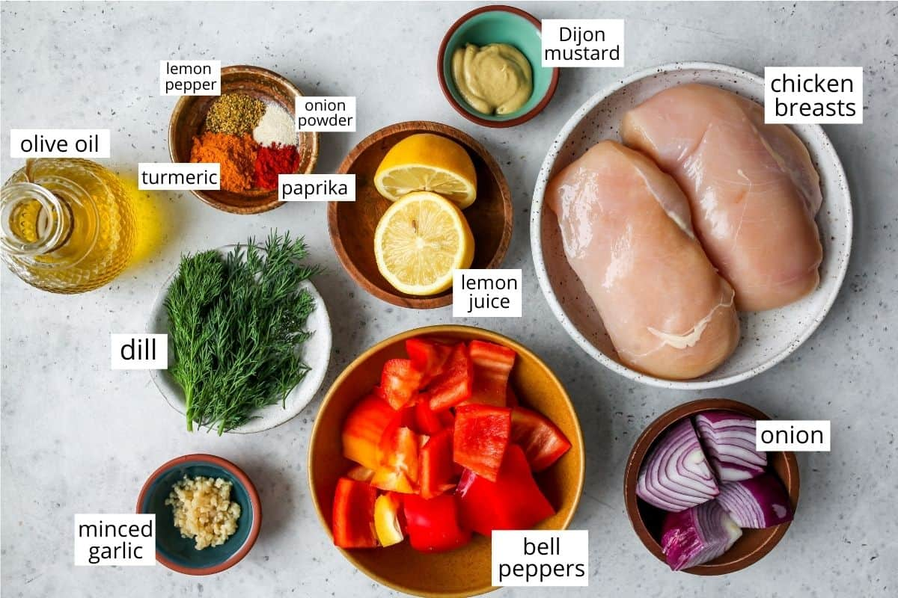

Recipe Details
Chicken kebabs are so simple to make, they are basically marinaded chicken, threaded onto skewers
and cooked through.
Ingredients
Instructions
There are two things to note in this chicken kebab recipe: 1) The chicken needs to marinate
for at least 6 hours, preferably overnight. and 2) You need to soak the bamboo skewers in
hot water for at least 1 hour before assembling the kabobs for the best results (and no charred skewers).
Marinate chicken
Begin this recipe by making the kabob marinade and marinating the chicken for 6-24 hours.
Start by cutting the chicken breasts into 1” cubes or strips (your preference for kebabs).
Then, put the chicken breast pieces into a glass container with a lid or in a plastic bag
inside another container (in case the bag leaks, the marinade stains).
Then make the chicken kabob marinade by whisking the ingredients together in a medium-sized bowl.
Next, pour the marinade over the chicken and turn to coat the chicken.
Then, marinate the chicken in the refrigerator overnight (or for at least 6 hours).

one photo showing how to make chicken kabob marinade, and one photo showing the chicken marinating.
Assemble the Chicken Kebabs
Once the chicken has finished marinating, it’s time to assemble the kebabs. Remember, you need to
soak the bamboo skewers in warm water for at least 1 hour before assembling.
Or, you can use fire wire to grill the kabobs, then transfer the meat/veggies to a serving
to serve. I like this option because it’s reusable and there is no need for soaking.
Important note: Due to the addition of turmeric the marinade will stain anything
it touches, including your hands, counter tops, etc. I suggest wearing plastic or
rubber gloves when handling the chicken, assembling the kabobs, etc.
Assemble the kabobs alternating between chicken, bell peppers and onion until all
the meat/veggies are used.
Grill over medium heat for about 5 minutes on the first side, and 3-5 on the second side,
until chicken reaches an internal temperature of 160 degrees F.
Serve
Serve the chicken kebabs warm with your favorite sides. Here are some suggestions:
I always serve these chicken kabobs with homemade tzatziki and homemade hummus and
freshly made naan bread or pita bread.
A fresh salad pairs well with this chicken kebab recipe. Try our favorite Greek salad,
chickpea salad, burrata salad, or kale salad.